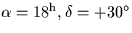

Next: SLA_S2TP - Spherical to Tangent Plane
Up: SUBPROGRAM SPECIFICATIONS
Previous: SLA_RVLSRD - RV Corrn to Dynamical LSR
- ACTION:
- Velocity component in a given direction due to the Sun's
motion with respect to a kinematical Local Standard of Rest.
- CALL:
- R = sla_RVLSRK (R2000, D2000)
- GIVEN:
-
| R2000,D2000 |
R |
J2000.0 mean ![$[\,\alpha,\delta\,]$](img3.gif) (radians) (radians) |
|---|
- RETURNED:
-
| sla_RVLSRK |
R |
Component of standard solar motion
in direction R2000,D2000 (km s-1) |
|---|
- NOTES:
- 1.
- Sign convention: the result is positive when
the Sun is receding from the given point on the sky.
- 2.
- The Local Standard of Rest used here is one of several
kinematical LSRs in common use. A kinematical LSR is the
mean standard of rest of specified star catalogues or stellar
populations. The Sun's motion with respect to a kinematical
LSR is known as the standard solar motion.
- 3.
- There is another sort of LSR, seldom used by observational
astronomers, called the dynamical LSR. This is a
point in the vicinity of the Sun which is in a circular orbit
around the Galactic centre. The Sun's motion with respect to
the dynamical LSR is called the peculiar solar motion. To
obtain a radial velocity correction with respect to the
dynamical LSR use the routine sla_RVLSRD.
- 4.
- The adopted standard solar motion is 20 km s-1
towards  (1900).
- REFERENCES:
- 1.
- Delhaye (1965), in Stars and Stellar Systems, vol 5, p73.
- 2.
- Methods of Experimental Physics (ed Meeks), vol 12,
part C, sec 6.1.5.2, p281.
Next: SLA_S2TP - Spherical to Tangent Plane
Up: SUBPROGRAM SPECIFICATIONS
Previous: SLA_RVLSRD - RV Corrn to Dynamical LSR
SLALIB --- Positional Astronomy Library
Starlink User Note 67
P. T. Wallace
12 October 1999
E-mail:ptw@star.rl.ac.uk